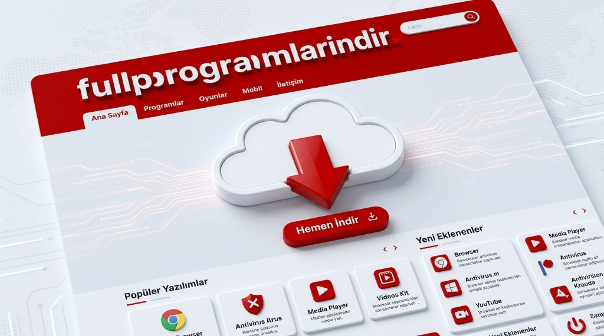
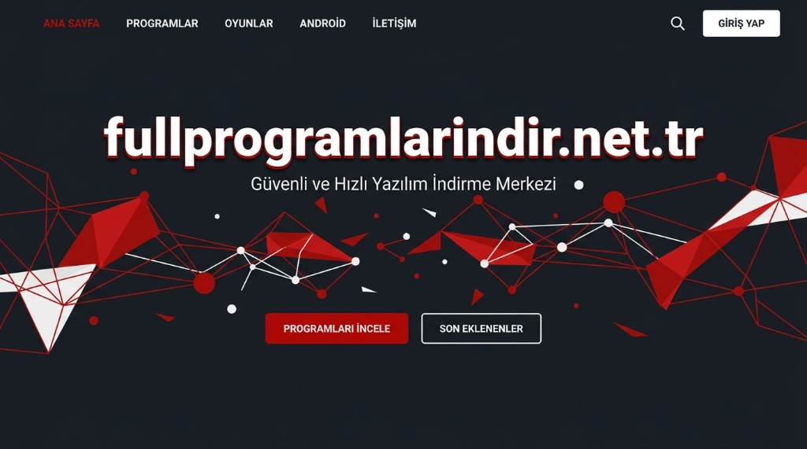
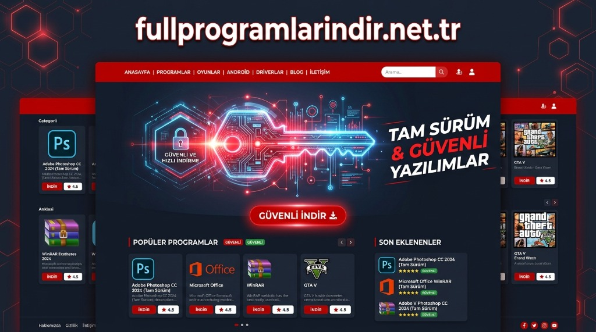
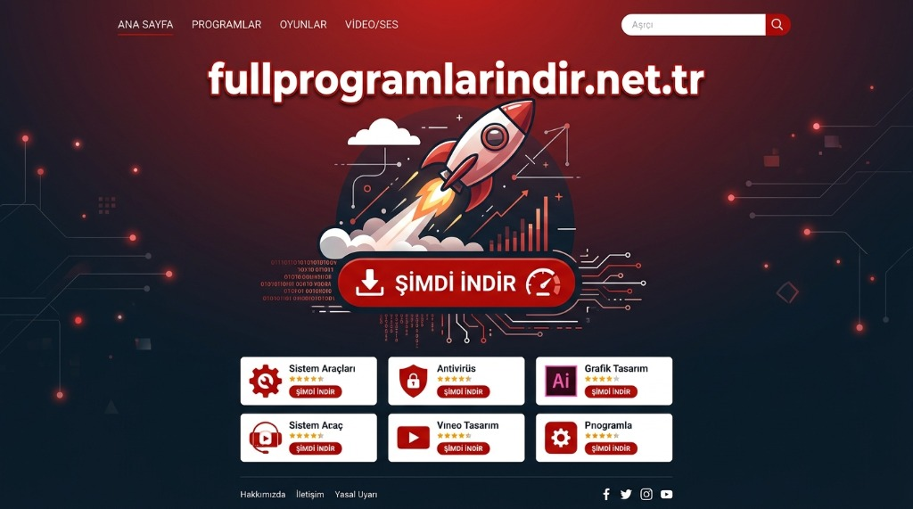

Silinen dosyaları, fotoğrafları ve belgeleri geri getirin. En iyi ücretsiz veri kurtarma araçları tek platformda.
Türkiye'nin en kapsamlı ücretsiz yazılım arşivi




| # | Bölüm Başlığı | Konu |
|---|---|---|
| 1 | Giriş: Veri Kaybı ve Çözüm | Neden Veri Kurtarma Gerekli? |
| 2 | Recuva ile Veri Kurtarma | En Popüler Ücretsiz Araç |
| 3 | TestDisk ve PhotoRec | Açık Kaynaklı Güç |
| 4 | Disk Drill Free | Modern Arayüz, Güçlü Kurtarma |
| 5 | Puran File Recovery | Hafif ve Etkili Araç |
| 6 | İpuçları ve Öneriler | Veri Kaybını Önleme |
| 7 | Karşılaştırma Tablosu | Hangi Araç Size Uygun? |
| 8 | Sık Sorulan Sorular | 7 Kritik Soru ve Yanıt |
| 9 | Sonuç | Özet ve Tavsiyeler |
Bilgisayar kullanımında en sık karşılaşılan ve en büyük paniğe yol açan durumların başında veri kaybı gelmektedir. Yıllarca biriktirilen fotoğraflar, tamamlanmak üzere olan bir proje dosyası, kritik iş belgeleri ya da değerli müzik koleksiyonu; bir anlık dikkatsizlik, elektrik kesintisi veya depolama aygıtı arızası sonucunda yok olabilmektedir.
Veri kaybının gerçekleşme nedenleri oldukça çeşitlidir. Kullanıcı hatası kaynaklı silme işlemleri, biçimlendirme (format) atma, virüs saldırıları, sabit disk arızaları ve işletim sistemi çökmeleri bu nedenlerin başında gelmektedir. Her ne kadar bu durumlar son derece üzücü olsa da çoğu zaman profesyonel yardım ya da pahalı yazılımlar olmadan verileri kurtarmak mümkündür.
Full Programlar İndir, Türk kullanıcılara yönelik kapsamlı yazılım platformu olarak veri kurtarma alanında da güçlü ve ücretsiz çözümler sunmaktadır. Bu rehberde platformda öne çıkan veri kurtarma araçlarını ayrıntılı biçimde inceleyecek, nasıl kullanıldıklarını açıklayacak ve hangi durumda hangi aracın tercih edilmesi gerektiğini değerlendireceğiz.
Full Programlar İndir platformunun veri kurtarma kategorisinde en çok tercih edilen araç olan Recuva, CCleaner'ın yapımcısı Piriform tarafından geliştirilen ve ücretsiz olarak sunulan güçlü bir veri kurtarma yazılımıdır.
Recuva; sabit disklerden, USB belleklerden, hafıza kartlarından ve hatta çöp kutusundan kalıcı olarak silinen dosyaları geri getirme konusunda oldukça başarılıdır. Fotoğraflar, müzik dosyaları, belgeler, videolar ve e-postalar kurtarılabilecek dosya türleri arasındadır.
Recuva'nın en büyük avantajlarından biri sezgisel sihirbaz modudur. Teknik bilgiye sahip olmayan kullanıcılar bile birkaç adımda kurtarma işlemini başlatabilmektedir. Hangi tür dosyaları aradığınızı belirledikten sonra Recuva sisteminizi taramakta ve kurtarılabilir dosyaları listeler halinde sunmaktadır.
Standart tarama yeterli olmadığında Recuva'nın Derin Tarama modu devreye girmektedir. Bu mod disk yüzeyini çok daha ayrıntılı biçimde incelemekte ve standart taramanın kaçırdığı dosyaları bulabilmektedir. Özellikle biçimlendirilmiş disklerden veri kurtarmada derin tarama vazgeçilmez bir araçtır.
Recuva, bulunan her dosyanın yanında kurtarılabilirlik durumunu renk kodlu göstergelerle sunmaktadır. Yeşil renk dosyanın mükemmel durumda olduğunu, sarı kısmen hasarlı olduğunu, kırmızı ise kurtarmanın güç olduğunu ifade etmektedir. Bu özellik hangi dosyalara öncelik verilmesi gerektiğini net biçimde ortaya koymaktadır.
Kurtarılmak istenmeyen hassas dosyaların kalıcı olarak silinmesi için Recuva güvenli silme özelliği de sunmaktadır. Bu özellik, gizli dosyaların asla kurtarılamamasını sağlamaktadır.
CGSecurity tarafından geliştirilen TestDisk ve PhotoRec, açık kaynaklı veri kurtarma araçları arasında en köklü ve güvenilir seçeneklerden biridir. Full Programlar İndir platformu üzerinden erişilebilen bu araçlar, özellikle biçimlendirilmiş diskleri ve kaybolan bölümleri kurtarma konusunda rakipsizdir.
TestDisk esas itibarıyla bölüm tablosu kurtarma aracıdır. İşletim sisteminin göremediği ya da erişemediği disk bölümlerini tespit ederek geri yüklemektedir. MBR ve GPT bölüm tablolarının her ikisini de destekleyen TestDisk, ciddi disk hasarlarında son çare olarak başvurulacak güçlü bir araçtır.
Adından da anlaşılacağı üzere PhotoRec fotoğraf kurtarma üzerine uzmanlaşmış olmakla birlikte yalnızca görüntü dosyalarıyla sınırlı değildir. 480'den fazla dosya formatını destekleyen PhotoRec; belgeler, videolar, müzik dosyaları ve arşivleri de kurtarabilmektedir. Dosya sistemi yapısı ne olursa olsun, hatta tamamen bozulmuş disklerde bile ham dosya kurtarması yapabilmesi PhotoRec'i diğer araçlardan ayıran en önemli özelliğidir.
TestDisk ve PhotoRec, grafiksel arayüz yerine komut satırı arayüzüne sahiptir. Bu durum yeni başlayan kullanıcılar için öğrenme eğrisini biraz dik kılmaktadır; ancak çevrimiçi bol miktarda Türkçe rehber mevcuttur ve adım adım yönlendirme sayesinde süreç yönetilebilir durumdadır.
Disk Drill'in ücretsiz sürümü, modern ve kullanıcı dostu arayüzüyle dikkat çeken bir veri kurtarma aracıdır. Full Programlar İndir platformunda erişilebilen Disk Drill Free, özellikle teknik bilgisi sınırlı kullanıcılar için idealdir.
Ücretsiz sürümünde 500 MB'a kadar veri kurtarma imkânı sunan Disk Drill, bu sınır dahilinde oldukça kapsamlı bir kurtarma deneyimi sunmaktadır. Kurtarma işlemi tamamlandıktan sonra dosyaları önizlemek, dosya tipine ve boyuta göre filtrelemek ve kurtarılacak dosyaları seçmek mümkündür.
Disk Drill'in öne çıkan özelliklerinden biri Recovery Vault sistemidir. Bu koruma katmanı etkinleştirildiğinde, izlenen klasörlerdeki dosyalar silinse bile Disk Drill bu dosyaların metadata bilgilerini saklayarak kurtarma başarı oranını önemli ölçüde artırmaktadır.
Düşük sistem kaynakları gerektiren ve kurulum gerektirmeyen taşınabilir versiyonuyla dikkat çeken Puran File Recovery, eski bilgisayarlarda ve kısıtlı ortamlarda veri kurtarma için ideal bir araçtır. Full Programlar İndir üzerinden erişilebilen Puran File Recovery, FAT ve NTFS dosya sistemlerinde silinen dosyaları etkili biçimde tespit etmektedir.
Kurulum gerektirmemesi, Puran File Recovery'yi USB bellek üzerinden çalıştırılabilir kılmaktadır. Bu özellik, işletim sistemi çökmüş ya da yeni kurulmuş sistemlerde veri kurtarma açısından büyük bir avantaj sağlamaktadır. Başka bir bilgisayardan hasar görmüş diske erişerek kurtarma işlemi başlatmak mümkündür.
Veri kurtarma araçları son derece güçlü olsa da en iyi yaklaşım veri kaybını baştan önlemektir. Full Programlar İndir platformu yedekleme ve sistem koruma araçları konusunda da kapsamlı içerik sunmaktadır.
3-2-1 yedekleme kuralı, veri güvenliği uzmanları tarafından evrensel bir standart olarak kabul görmektedir. Bu kurala göre verinin 3 kopyası, 2 farklı depolama ortamında ve bunlardan 1'i uzak lokasyonda bulunmalıdır. Bulut depolama hizmetleri ve harici sabit diskler bu kuralı uygulamayı kolaylaştırmaktadır.
Fidye yazılımları ve virüsler veri kaybının önemli nedenlerinden biridir. Güncel antivirüs yazılımı kullanmak bu tehditlere karşı temel bir koruma katmanı oluşturmaktadır. Full Programlar İndir platformunda güçlü ücretsiz antivirüs araçları mevcuttur.
Ani güç kesintileri, özellikle yazma işlemi sırasında ciddi veri bozulmalarına yol açabilmektedir. Kesintisiz güç kaynağı (UPS) bu riske karşı etkili bir fiziksel önlemdir.
CrystalDiskInfo gibi ücretsiz disk sağlık izleme araçları, sabit diskin arızalanmadan önce uyarı vermesini sağlamaktadır. Full Programlar İndir platformunda bu araçlara erişmek mümkündür.
| Program | Arayüz | Derin Tarama | Format Sonrası | Taşınabilir | Ücretsiz |
|---|---|---|---|---|---|
| Recuva | Kolay | ✔ Var | ✔ Var | ✔ Var | Tam |
| TestDisk | Komut Satırı | ✔ Var | ✔ Var | ✔ Var | Tam |
| PhotoRec | Komut Satırı | ✔ Var | ✔ Var | ✔ Var | Tam |
| Disk Drill Free | Modern/Kolay | ✔ Var | ✔ Var | ✘ Yok | 500 MB Limit |
| Puran File Recovery | Orta | ✔ Var | ✘ Sınırlı | ✔ Var | Tam |
Bu tablodaki programların tamamına Full Programlar İndir platformu üzerinden güvenle erişilebilmektedir. Türkçe açıklamalar ve güncel sürümlerle her araç platforma eksiksiz biçimde yansıtılmaktadır.
Full Programlar İndir platformundan veri kurtarma araçlarını indirmek son derece kolay ve güvenlidir. Platforma girip arama kutusuna Recuva, TestDisk veya Disk Drill yazmanız yeterlidir. Program sayfasındaki Türkçe açıklamayı ve sistem gereksinimlerini inceledikten sonra İndir butonuna tıklayarak kurulumu başlatabilirsiniz.
Tüm içerikler orijinal kaynaklardan temin edilmekte ve antivirüs taramasından geçirilmektedir. Full programlar indir güvenilir mi sorusunun yanıtı platformun milyonlarca memnun kullanıcısında saklıdır.
Veri kaybı ne kadar üzücü bir deneyim olsa da doğru araçlarla çoğu zaman çözüme kavuşturulabilmektedir. Full Programlar İndir platformu sayesinde Recuva, TestDisk, PhotoRec, Disk Drill ve Puran File Recovery gibi güçlü araçlara tek platformdan ücretsiz erişmek mümkündür.
Kullanıcı dostu arayüz arayanlar için Recuva, biçimlendirilmiş disklerden kapsamlı kurtarma yapanlar için TestDisk ve PhotoRec kombinasyonu, modern deneyim isteyenler için Disk Drill Free ideal seçeneklerdir. Taşınabilir çözüm arıyorsanız Puran File Recovery en pratik tercihtir.
Tüm bu araçlara Türkçe açıklamalar ve güvenli indirme bağlantılarıyla Full Programlar İndir üzerinden erişebilirsiniz. Veri kaybı yaşamadan önce bu araçları edinin ve sisteminizi düzenli olarak yedekleyin. Full Programlar İndir her zaman yanınızda!